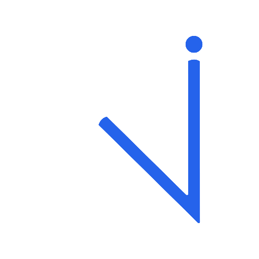

NoetriaCARTE DE VISITEPRÉSIDENT · FONDATEUR
Frédérick
Bisone
Docteur en informatique
Intelligence artificielle · Data · R&D

NoetriaCARTE DE VISITEPRÉSIDENT · FONDATEUR
Docteur en informatique
Intelligence artificielle · Data · R&D